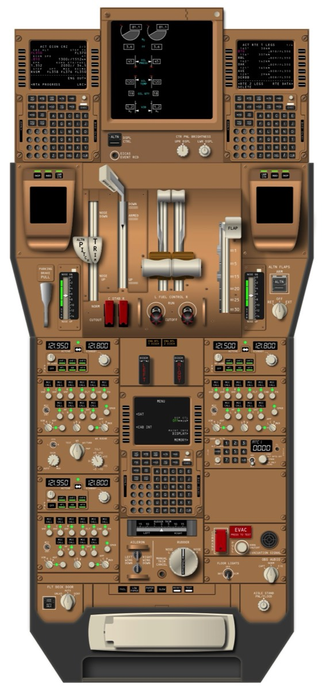

Click any control section to inspect details, functional overviews, and P/Ns.

| Subsystem Component | Part Number | Tracking Phase |
|---|---|---|
| Left Flight Management Computer CDU Terminal | [TBD] | Awaiting Input |
| Right Flight Management Computer CDU Terminal | [TBD] | Awaiting Input |
| Thrust Lever Quadrant Assembly Base | [TBD] | Awaiting Input |
| Flap Selection Potentiometer Controller | [TBD] | Awaiting Input |
| Engine Fuel Engine Cutoff Switch Block | [TBD] | Awaiting Input |
| Captain VHF Tuning Panel Unit | [TBD] | Awaiting Input |
| First Officer VHF Tuning Panel Unit | [TBD] | Awaiting Input |
| Center Multi-Purpose Maintenance CDU Terminal | [TBD] | Awaiting Input |
| Flight Deck Armored Door Locking Matrix | [TBD] | Awaiting Input |
| Rudder Trim / Lateral Aileron Trim Assembly | [TBD] | Awaiting Input |
| Mode S ATC Transponder Selection Device | [TBD] | Awaiting Input |
| Cockpit Flight Strip Data Printer Housing | [TBD] | Awaiting Input |